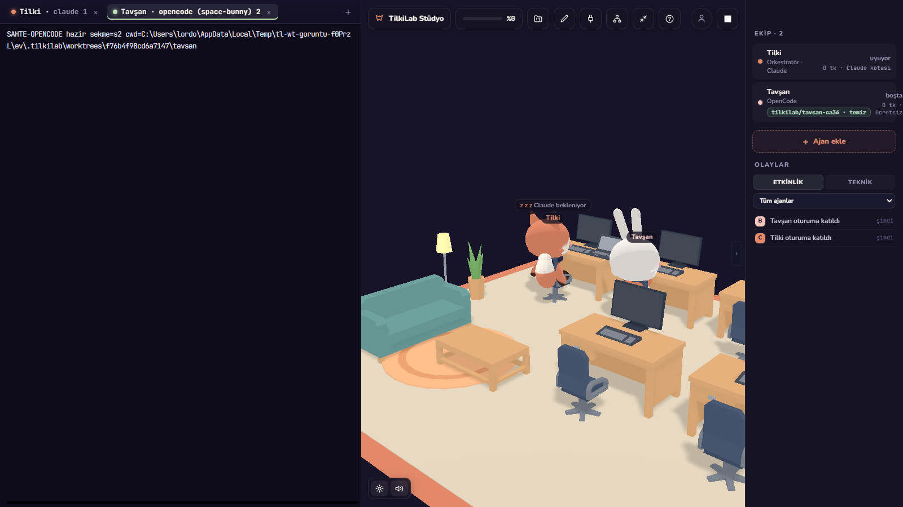

Git Worktrees for AI Coding Agents: Guide
Running autonomous coding agents simultaneously without file corruption requires isolated disk checkouts. Here is why Git worktrees are the optimal isolation mechanism for AI developers.
Why Traditional Branching Fails for AI Agents
Human developers switch branches sequentially: you finish an edit, commit, and run git checkout another-branch. However, autonomous agents work asynchronously and concurrently.
If you attempt to run Agent A on feature/login and Agent B on bugfix/header within the same folder, you encounter disaster:
- Single Working Tree: Git only allows one active checked-out branch per directory. Running
git checkoutin one terminal disrupts whatever files the other agent is currently reading or editing. - Dirty Index Lockouts: If Agent A has uncommitted modifications, Git will block Agent B from switching branches.
- Ghost Edits: Agent A might accidentally commit files created by Agent B, contaminating commit history.
Worktrees vs. Multiple Clones
A common workaround is cloning the entire repository into multiple folders (repo-copy-1, repo-copy-2). While this provides isolation, it introduces serious drawbacks:
| Approach | Disk Space | Sync Speed | Commit Visibility |
|---|---|---|---|
| Full Git Clone | Duplicates entire history (slow, heavy) | Requires manual git push/pull between local directories |
Isolated until pushed to remote |
| Git Worktree | Near-zero overhead (shared .git/objects) |
Instantaneous (direct pointer reference) | Commits immediately accessible across all worktrees |
Git worktrees allow multiple directories to be attached to a single local Git repository. Each worktree has its own working directory and checked-out branch, but they share the exact same object database and commit history.
Essential Git Worktree Commands for AI Workflows
1. Creating a New Worktree for an Agent
To assign an agent its own working space, run git worktree add. Specify the destination directory path and the branch name:
# Create worktree for sub-agent on branch 'agent/refactor-auth'
git worktree add ../agent-refactor-auth -b agent/refactor-auth
# Change directory into the new worktree
cd ../agent-refactor-auth
You can now launch Claude Code, Codex, or OpenCode inside ../agent-refactor-auth. The agent can modify, create, and delete files without touching your main working directory.
2. Listing Active Worktrees
To inspect all active agent workspaces across your repository:
git worktree listOutput displays the directory path, commit hash, and branch name for every active worktree:
C:/dev/my-project a81b3f9 [main]
C:/dev/agent-refactor-auth 9f2a014 [agent/refactor-auth]3. Merging and Teardown
When the agent finishes its task and verifies test results:
# Return to your main repository directory
cd ../my-project
# Review agent diff
git diff main..agent/refactor-auth
# Merge the clean branch
git merge --no-ff agent/refactor-auth
# Delete the agent worktree directory
git worktree remove ../agent-refactor-auth
# Clean up any stale worktree references
git worktree pruneHow Foxpit Automates Worktree Management
Typing manual worktree commands for every parallel agent can interrupt your flow. Foxpit automates the entire lifecycle:
- Automatic Provisioning: When you spawn a new sub-agent in Foxpit with isolation enabled, the app automatically creates a worktree directory linked to your repo.
- Worktree Indicator Badge: The cockpit displays the current worktree directory and branch status prominently in the agent's header.
- Diff Inspection: Review changes made in the worktree directly within the desktop UI before approving merges.
- Guided Cleanup: From the worktree badge you can remove a finished worktree; Foxpit refuses to force-delete one with uncommitted changes and prunes stale records so orphaned directories do not pile up.

Best Practices for Multi-Agent Worktrees
- Always use descriptive branch prefixes: Standardize on
agent/<purpose>orsub/<issue-id>to keepgit branchclean. - Ensure your build artifacts are ignored: Verify that
node_modules/,target/, andbuild/are in.gitignoreso worktree creation stays fast. - Prune regularly: Run
git worktree pruneoccasionally if you remove worktree folders manually.
Ready to try automated worktrees with your coding agents?